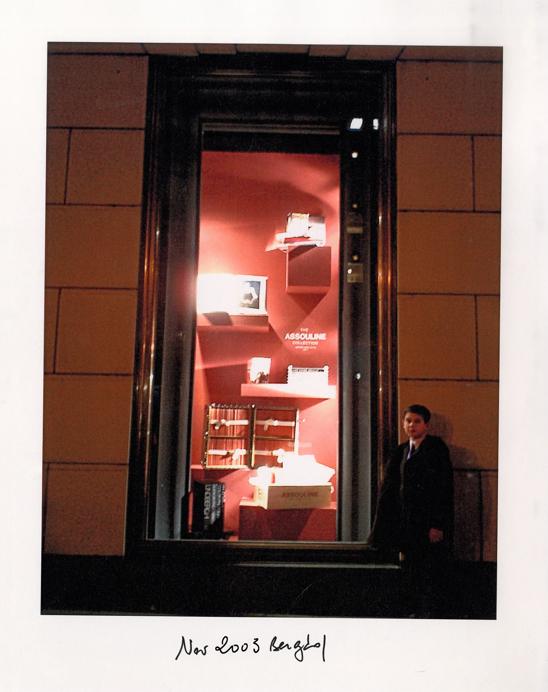
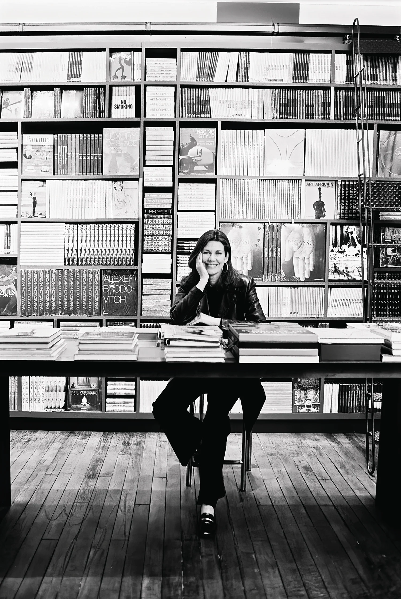

A través de libros excepcionales, fragancias para el hogar y objetos de arte, Assouline invita a los intelectuales y curiosos a un mundo de belleza. Aquí, te invitamos a conocer la historia de esta colaboración, fundada en París en 2024 por la visión compartida de Prosper Assouline, Martine Assouline y Magdalena Ropolo.
Todo comenzó en 1993, cuando Martine y Prosper Assouline se encontraban en el hotel La Colombe d'Or en Francia, uno de sus lugares favoritos en el mundo. Mientras experimentaban juntos su belleza, su curiosidad por la vida y su amor por los libros los inspiraron a crear su propio volumen sobre el hotel. Prosper capturó las imágenes, Martine escribió el texto, y La Colombe D'Or se convirtió en su primer libro, lanzado en 1994.
En 2024, Magdalena Ropolo descubrió en Buenos Aires un ejemplar vintage de aquella primera edición de La Colombe d'Or. Fascinada por la filosofía editorial de Assouline y compartiendo esa misma pasión por el viaje como forma de arte, nació una colaboración natural. The Travel Series Collection reúne destinos cuidadosamente curados desde la perspectiva de Magdalena, manteniendo intacto el espíritu fundacional de Assouline: la unión del talento editorial de Martine y la visión creativa de Prosper.
